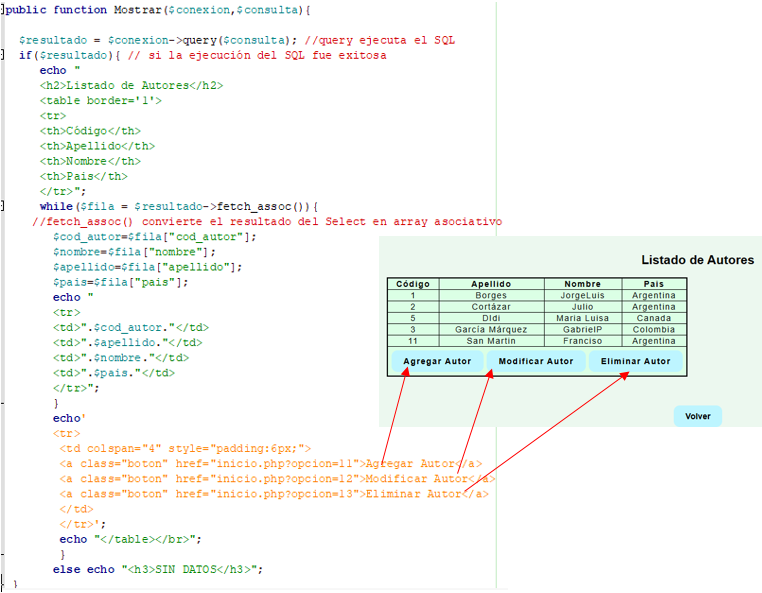

Para mostrar un listado, primero ejecutamos una consulta SELECT. Luego, mediante un bucle while y la función
$resultado->fetch_assoc(), recorremos los registros fila por fila.
El método $resultado->fetch_assoc() sirve para extraer una fila de los resultados que devolvió la base de datos y transformarla en un array asociativo de PHP.
Cada registro se convierte en un arreglo asociativo donde los índices son los nombres de las columnas (ej. "cod_autor", "nombre", "apellido").

El botón
href envia la elección del usuario al archivo inicio.php con un nuevo valor de opcion para que se evalúe en el switch y se llame al método que corresponda (Agregar nuevo autor, Modificar autor o Eliminar autor).Al enviar valores por href, se envían por GET.
Observar que las opciones debajo de la tabla tienen el aspecto de href